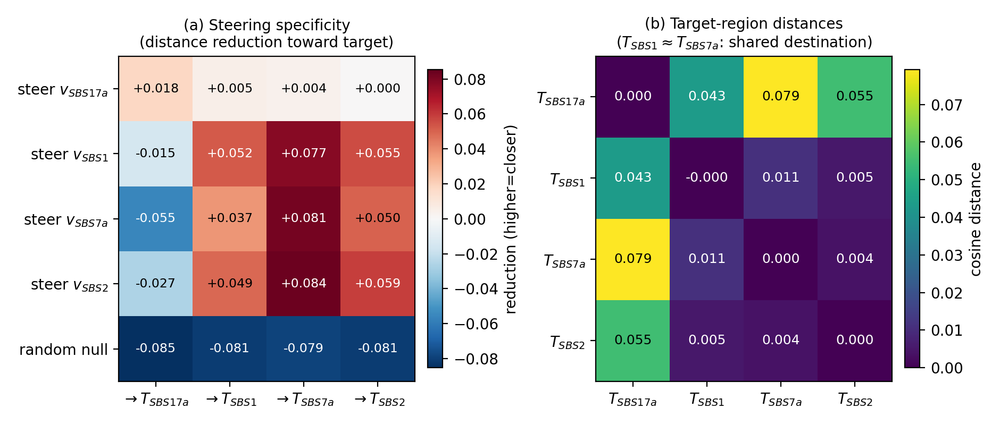
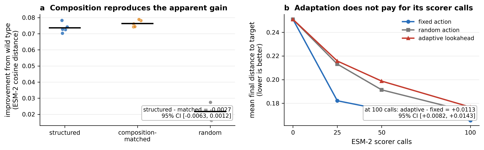
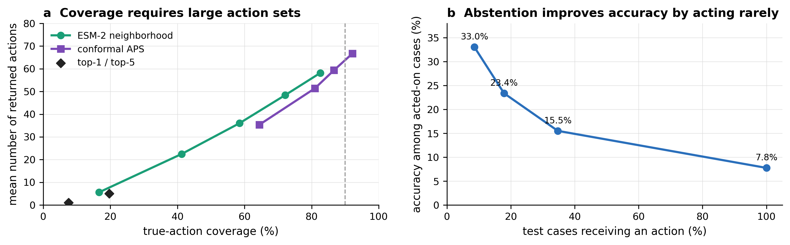
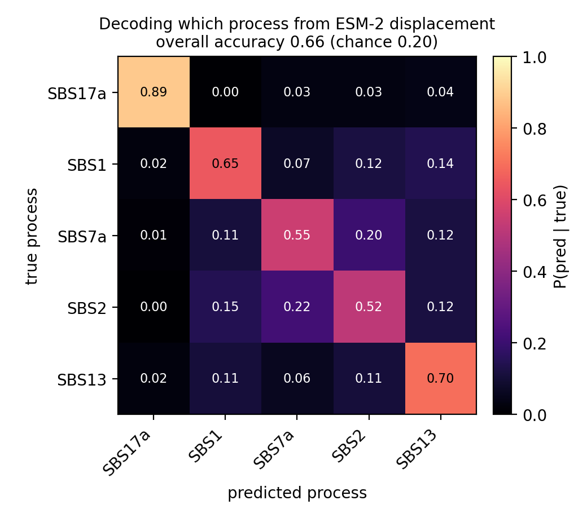

Action Identifiability in Protein-Design Agents, and Evaluating Biological Agents
AITHYRA
MoML 2026 (MIT) AgenticLS @ NeurIPS 2026 WiML @ NeurIPS 2026 AI for Science · Trust-AI-Eval · GEM-Bio · Verify-Agents @ NeurIPS 2026
A closed-loop molecular agent can only choose between actions its scorer keeps apart. I test whether a standard scorer does, build a five-category battery for auditing any homology-free claim, and run the same checks on the proxy, benchmark and verifier an agent delegates to. Terms in magentaLike this. Hover over a magenta term for a short definition. carry a definition on hover.
Contents
↑ Back to topMolecular design agents choose interventions by scoring predicted outcomes, so the scorer has to tell the available actions apart. I test that requirement with 78 COSMIC mutational processes as the actions and distance in ESM-2 space as the score, then apply the same discipline to the proxy, benchmark and verifier a design agent delegates to.
Median pairwise distance falls from 0.815 in COSMIC spectrum space to 0.0068 between ESM-2 outcome regions, a 120x compression, and a composition-matched control reproduces the destinations. A learned policy identifies the true action in 7.55% of held-out cases, split-conformal prediction reaches 92.2% coverage only by returning 66.8 of 78 actions, and an independent Pfam profile HMM finds no PF17041 hits at the curated threshold. A five-category audit battery separates a reproducible embedding effect from the mechanistic claim attached to it. The agent's other parts fail the same way. A zero-shot score ranks below counting, a benchmark correlation stops predicting selection, and a trust gate certifies a scorer that memorized the answers.
| A useful eval answers | In this report |
|---|---|
| What it measures | Movement in a learned representation, a benchmark correlation, a gate's in-sample AUROC |
| What it leaves out | Biological function, selection value at the top of a ranking, a supplied scorer's implementation |
| How it can be gamed | A composition-matched direction, a memorizing scorer, a single-residue metric exploit at 5 s.d. |
| When it should change a decision | Only after matched controls and an independent check survive. Otherwise widen the set or abstain. |
Part I · Action identifiability
A scorer can only choose between actions it keeps apart
MoML 2026 (MIT)AgenticLS @ NeurIPS 2026
A closed-loop molecular agent proposes an intervention, scores the resulting molecule, and uses the score to choose what to do next. This searches large spaces efficiently, and it works only if the scorer resolves the actions available to the policy. When several interventions produce scored outcomes that look the same, the agent cannot tell which intervention caused a result, so any mechanism it reports afterwards is unidentified.
Identifiability and biological admissibility are different properties. An action can represent a valid biological process while the scorer discards the information that separates it from other processes. The two come apart, and only one of them usually gets checked.
Testing the requirement needs an action space whose true distinctions are known independently of any learned model. The 78 COSMIC single-base-substitution signaturesCatalogued mutational processes. Each one is a distribution over the 96 trinucleotide substitution types, fitted to mutations observed in real tumours, so two signatures differ by evidence that owes nothing to a language model. give me that. Each is a distribution over 96 trinucleotide substitution types, catalogued from real mutational processes. An action here is one signature, enacted on a coding sequence to produce a mutant, which I then translate, embed with ESM-2, and score by cosine distance to a target Pfam-domain centroidThe mean ESM-2 embedding of the proteins in one Pfam family. Moving toward it is the agent's objective here, and standing in for the family's function is the assumption under test.. That gives me both halves of the comparison, how far apart two actions sit as processes and how far apart their outcomes sit after scoring.
The scorer compresses the action space
Across all 3,003 pairs of COSMIC signatures, the median distance between native 96-channel spectra is 0.815, and between the same actions' ESM-2 outcome regions it is 0.0068. The scored action space runs roughly two orders of magnitude tighter than the space the actions live in. 1,780 of the 3,003 pairs sit more than 0.5 apart in COSMIC space and fall within 0.011 of each other after scoring. SBS1 and SBS7a, clock-like ageing and UV exposure, sit 0.952 apart as spectra and 0.0055 apart as outcomes.
A composition-matched control shows why. Scrambling trinucleotide context and mutation placement while keeping the realized substitution composition reproduces each action's ESM-2 destination to within cosine distance 0.02, and the same pattern holds at ESM-2 8M and at 650M. So the agent has 78 nominal actions and a much coarser effective action space underneath.

Biological grounding leaves scorer-level identifiability open. The effective action space runs far coarser than the nominal one.
Matched controls remove the gain
On the PF17041 target the structured action looks like it works. It reduces ESM-2 distance by 0.0736 ± 0.0030 across five seeds, against 0.0218 ± 0.0051 for edit-count-matched random mutation. A design paper would report that number and stop. Composition matching then erases it. Reapplying the same amino-acid substitution multiset at random positions produces 0.0764, against 0.0736 for the structured action, and the paired difference is −0.0027 with a 95% CI of [−0.0063, 0.0012]. Trinucleotide context and mutation placement define a signature, and they add no steering power beyond the substitution composition that ESM-2 already keeps.
Scorer feedback adds nothing either. An unselected-drift control scores every proposal and accepts it regardless, improving target distance by 0.0737 against 0.0736 under Metropolis selection. Whatever the loop gains, it gains from the proposal distribution and not from the feedback. More compute leaves it where it is. At 100 ESM-2 scorer calls, five-action one-step lookahead reaches mean target distance 0.177, worse than a fixed policy at 0.165 and random selection at 0.173.

Every matched control removes a result that would otherwise be reported, and the scorer's resolution sets what is recoverable, not the agent's effort.
The policy recovers the action in a small fraction of cases
I trained a supervised policy on 35,403 realized Pfam-domain transitions to predict which of the 78 signatures produced a given transition. It reaches 7.55% top-1 accuracy on a protein-grouped split, against 6.12% for a nearest-neighbor baseline and 1.28% for uniform chance, an edge of +0.93 points over a train-only frequency lookup with a 95% CI of [+0.71, +1.27]. So the policy carries real information and still names the wrong action in 92.45% of held-out cases. Holding out complete processes drops top-1 to 0.8%, below the 1.3% baseline, and holding out SBS17a gives 0% recovery.
Uncertainty-aware interfaces return broad sets in place of a specific action. Adaptive prediction setsSplit-conformal prediction returns a set of candidate actions calibrated to contain the true one at a stated rate. The set size is what the calibration costs, so a wide set is the method reporting weak evidence rather than failing. reach 92.2% coverage and return 66.8 of 78 actions on average, with a median set size of 78, the whole catalogue. A direct ESM-2 neighborhood reaches 82.6% coverage at mean set size 58.2. The uncertainty quantification works as intended and reports that the evidence spreads across many actions.

The representation still carries a signal. A probe that reads an ESM-2 displacement and names which of five processes produced it reaches 66% five-way accuracy against 20% chance, and 89% on SBS17a. Its errors follow substitution composition, so it confuses SBS1 with SBS2 even though their COSMIC spectra are near-orthogonal at cosine 0.02. The representation decodes a real signal and merges processes the catalogue separates. Decoding differs from identifiability.

The policy carries a real signal and recovers only a small fraction of specific actions, and set-valued prediction buys coverage by returning most of the catalogue.
The objective moves proteins, and an independent check tests acquisition
The optimization moves proteins measurably closer to the PF17041 centroid. I checked that against a model sharing nothing with the objective, an independent Pfam profile HMMA probabilistic model of a protein family built from its curated alignment. Pfam publishes a gathering threshold for each family, the score a sequence must clear to count as a member, so the test is external to any embedding. evaluated with HMMER 3 against PF17041.11. Zero evaluated sequences pass the curated gathering threshold, and under a permissive threshold the structured-action sequences produce no match at all, with a best E of 0.34 elsewhere.
The objective is also exploitable. An agent making unconstrained single-residue edits drives cosine distance to the centroid from 0.26 to 0.009 over 200 edits, landing 5.0 standard deviations below the natural-protein reference mean of 0.194 ± 0.037 across 25 measured proteins, while ESM-2 naturalness falls alongside it from −0.41 to −0.50. The plausibility signal detects the departure. Both the objective and that self-check live in ESM-2, so a check in the same representation counts as independent evidence only from outside it.
Under the ESM-2 objective, proteins move toward the centroid while acquiring no PF17041-like properties, and an independent check outside that representation is what tells the two apart.
Part II · The audit battery, five failure modes
Five failure modes of a homology-free claim
WiML @ NeurIPS 2026
Deciding whether a mutation changes protein function drives variant interpretation and design, so a method that answers without a database match has to carry its own evidence. Sequence-homology searches supply both a prediction and an external biological reference, and 30 to 50% of genes lack annotated homologs. Protein language models offer a database-free alternative by treating movement in embedding space as evidence of functional change. Removing the database match also removes the reference that would expose a misleading score. The battery below tests whether a homology-free claim survives an adversarial audit of its data, generator, generalization, attribution and metric. I audited PRISM's strongest reported result, which links SBS17a to the PF17041 domain family across two structurally distinct protein clans.
| Failure mode | Observed result | What it changes |
|---|---|---|
| Data integrity | 1.8× hit inflation | Duplicate jobs and self-pairs alter discovery counts. |
| Generation | Spurious UV signal, 6× temperature shift | Decoder collapse and alignment create the apparent biology. |
| Generalization | AUC 0.94 in-distribution, 0.8% top-1 held out | Leave-signatures-out accuracy falls below the 1.3% frequency baseline. |
| Metric attack | 5.0 s.d. closer than natural proteins | Optimizing centroid distance reduces protein naturalness. |
| Attribution | SBS4 recovered first in 82% of trials | Correlated COSMIC signatures recover interchangeably. |
Length correction reduces the SBS17a to PF17041 enrichment from 60.7x to 18.7x and keeps its trajectory rank, #1 of 78. A composition-matched direction has cosine 0.86 ± 0.05 with the SBS17a direction and reproduces 72% of its displacement toward the PF17041 centroid. The direction and the centroid occupy the same ESM-2 space, so independent validation needs a model outside it. The evidence supports a reproducible, composition-associated property of ESM-2 geometry, and it does not support SBS17a as a biological driver of PF17041 function.
The five audit categories separate a reproducible embedding effect from the mechanistic claim attached to it, and the battery applies wherever a learned metric replaces an external reference.
Part III · Evaluating biological agents
The proxy, benchmark and verifier an agent delegates to
AI for Science @ NeurIPS 2026Trust-AI-Eval @ NeurIPS 2026GEM-Bio @ NeurIPS 2026Verify-Agents @ NeurIPS 2026
A closed-loop agent measures only part of what it decides on. It ranks thousands of candidates with a cheap proxy, trusts that proxy because a benchmark reported a correlation, and delegates ranking to a supplied scorer once a trust gate clears it. Each of those is a measurement read off a static corpus, and each fails the way action identifiability does.
The proxy ranks below counting. On 504 measured PET-hydrolase variants across 25 studies, a zero-shot ESM-2 650M score ranks activity at a within-study Spearman of 0.01, below a hydropathy feature and well below a plain mutation count at 0.25. The expensive model comes last of four scorers on the property a campaign would use it for.

Benchmark correlation stops predicting where campaigns act. Across 70 benchmark units in four corpora, reported correlation explains half the variance in top-10% selection value and 16% at top-1%, and three of 41 ProteinGym assays give worse-than-random top-1% selections despite positive reported correlations. The same correlation also means different things across families. At matched correlation, SSMuLA libraries deliver +0.265 more top-1% value than ProteinGym (p = 0.0001), so a leaderboard scalar is comparable only within a family mixture.

A trust gate certifies memorization. Across 4,920 trials, a scorer that memorizes the observed outcomes clears the gate at AUROC 0.991 and passes every trial, against 0.663 for the truthful scorer worth +1.082. Forward validation closes that surface. A pool-side attacker that touches only unmeasured candidates still returns identical gate statistics by construction and costs 1.24 good candidates per batch. A probe catches 99.2% of naive attacks and recovers about 10% of the lost value with a random fallback, because catching an attack and replacing it are different problems.

The proxy, benchmark and verifier each fail where the agent uses them, because a static number is not the quantity an optimizer pushes on.
What the joint report adds up to
A three-step evaluation
- Measure whether the scorer distinguishes the actions available to the policy.Compare distances in the action's own parameterization against distances between scored outcomes. Cheap, and diagnostic.
- Compare optimization against matched controls.Match proposal distribution, edit count, sequence length and scorer-call budget. Each matched control here removed a result that would otherwise have been reported.
- Validate the molecular claim with a measurement independent of the objective.When the objective and the check share a representation, independence is what makes the check count as evidence.
Limitations
The identifiability conclusions apply to the action-scorer pair studied here. Other actions or scorers may keep more mechanistic information, and the recipe treats that as a measurable question in place of an assumption. The steering and decoding experiments cover a subset of signatures while the destination analysis covers all 78, so catalogue-wide overlap is established and per-signature steering specificity stays open. ESM-2 8M and 650M share training data and tokenization, so the scale comparison is a within-family check and not an independent-model replication, and the 0.011 collapse bar is inherited from an earlier four-signature experiment. The evaluating-biological-agents results are each scoped to their own data, PET-hydrolytic activity for the proxy, four corpora with the family offset estimated from two of them for the benchmark, and an offline counterfactual evaluation on pre-selected pools for the verifier, so absolute performance there is comparative and not a population estimate. Methods that steer protein representations are dual-use. I restricted the action space to characterized processes, and the work audits failure modes in place of claiming successful molecular design.